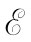

在上一章中我们曾描述过许多现象，它们表明电感效应既很复杂又很有趣。现在我们要讨论控制这些效应的基本原理。我们已经把导电电路中的电动势定义为作用在电荷上的力对该回路全长的总累积。更具体地说，它是作用于单位电荷上力的切向分量，沿该电路一周的线积分。因此，在数量上就等于环绕电路一周对单位电荷所作的总功。
我们也已给出这样的“通量法则”，它讲：电动势等于穿过这样一个导电电路的磁通量的变化率。让我们来看看能否理解其中的原因。首先，我们将考虑由于电路在恒定磁场中移动而导致通量变化的情况。
在图17-1中，我们表示一个面积可以改变的简单导线回路。这回路有两部分，固定的U形部分（a）和一根可以在该U的两腿上滑动的横杆（b）。它始终是一个完整电路，不过其面积是在变化的。假设现在把该回路置于一匀强磁场中，使U形平面垂直于磁场。按照通量法则，当横杆移动时在回路中就该产生一个电动势，它与穿过回路通量的变化率成正比。这电动势将在回路中引起电流。我们将假定导线中的电阻相当大以致电流很小，于是便可以略去来自这个电流的任何磁场。
图17-1 如果通量是由于改变电路面积而改变的，则在该回路中会感生一电动势
穿过该回路的磁通量为wLB，因而对于电动势——我们将把它写成 ——“通量法则”给出
式中v是该横杆的移动速率。
现在应该能够从作用于移动杆里电荷上的磁力v×B来理解这一结果。这些电荷会感受到一个力，该力与导线相切，每单位电荷所受的力等于vB。在沿横杆的长度w上这力恒定，而在别处则都是零，因此力沿整个电路的积分为
这与上面从通量的变化率所获得的结果相同。
刚才所给出的论证可以推广至导线在固定磁场中移动的任何情况。在一般情况，人们能够证明：对于任何电路，当其部分在固定磁场中移动时，产生的电动势等于通量对时间的微商，而与该电路的形状无关。
反之，若回路固定不动而改变磁场，情况将会怎样呢？我们不能根据同一论证来导出对这一问题的解答。那是法拉第在实验上的发现，即不管通量怎样变化，该“通量法则”总是正确的。作用于电荷上的力，普遍地说，是由F=q（E+v×B）给出的，并没有任何新的特殊的、“由于变化磁场而产生的力”。任何作用于固定导线中的静止电荷上的力都是来自E的项。法拉第的观察导致发现电场和磁场是由一个新的规律联系起来的：在一个其中磁场正在随时间变化的区域里，电场被产生了。正是这一电场驱使着电子围绕该导线移动——因而当有变化磁通量时在一固定电路中引起电动势。
对于与变化磁场有关的电场，其普遍的定律为
（17.1）
我们将这称之为法拉第定律。它是由法拉第发现的，但首先是麦克斯韦将其写成一微分形式并作为他方程组中的一个方程。让我们看一看这方程怎样给出电路中的“通量法则”。
利用斯托克斯定理，这一定律可以写成积分形式：
式中Γ通常指任意闭合曲线，而S则是由它所包围的任何曲面。这里应该记住，Γ是一条固定于空间中的数学 曲线，而S则是一个固定曲面。于是该时间微商就可以移至积分符号的外面，因而我们有
把这个关系式应用到沿一个固定 的导电电路而行的曲线Γ，我们便再度获得“通量法则”。左边的积分为电动势，而右边积分则是由该电路包围着的通量的负变化率。所以式（17.1）应用在一个固定电路上时，就相当于“通量法则”。
因此，“通量法则”——电路中的电动势等于穿过该电路磁通量的变化率——无论由磁场变化还是由电路运动（或两者兼有）所引起的通量变化都适用。在该法则的表述中这两种可能性——“电路移动”或“磁场变化”——不能加以区别。然而在我们对该法则的解释中，则对于这两种情况已用了两条完全不同的定律——在“电路移动”中用v×B，而在“磁场改变”中则用▽×E=-∂B/∂t。
我们知道，在物理学的其他领域里还没有一个这么简单而又准确的普遍原理，为了真正理解它需要依据两种不同现象 的分析。通常，这么一个优异的普遍性总是发源于一个单一而又深刻的基本原理。然而，在我们这种情况下一点没有任何这样的深刻的含意。因此，我们得把这个“法则”理解为两种完全独立现象的组合效应。
我们必须按照下述方式来看待“通量法则”。一般地说，对单位电荷的作用力为F/q=E+v×B。在移动导线时，有一个来自第二项的力。并且，如果某处有变化着的磁场，则该处也有一个E场。它们是两个独立效应，但环绕该导线回路的电动势则始终等于穿过其中的磁通量的变化率。